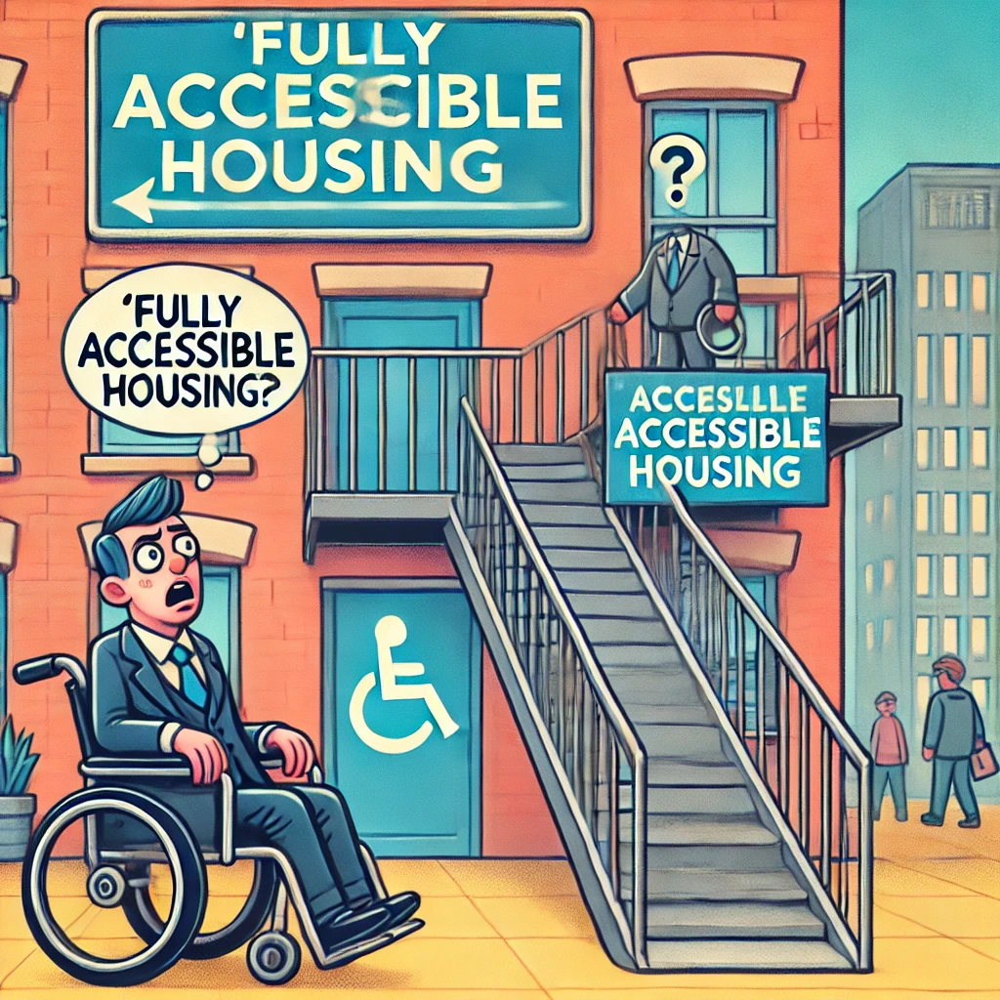

📅 Published: February 16, 2025
The UK Government shocked the nation today by redefining "accessible housing" as "any building that has a front door," sparking outrage among disabled rights advocates and housing experts alike.
“We’ve Done Enough,” Claims Housing Minister
In a statement that left many scratching their heads, the Housing Minister declared:
Public Reactions Pour In
Reactions have been swift and scathing. Disability rights groups labeled the new definition "a joke in poor taste," with one activist tweeting:
Expert Opinions
Housing experts argue that true accessibility means much more than just a door. Accessible properties should have step-free access, wide doorways, accessible bathrooms, and appropriate kitchen fittings. Without these considerations, "accessibility" becomes a hollow term.
The Bigger Picture
This redefinition comes amidst growing concerns over the lack of accessible housing in the UK. Recent statistics show that less than 7% of homes meet even the basic accessibility standards.

What’s Next?
As the backlash grows, many are calling for a complete reversal of the new policy. Advocacy groups are urging the public to join campaigns for meaningful accessibility reforms.